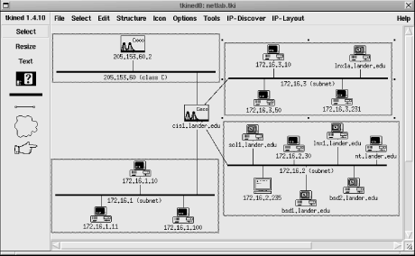
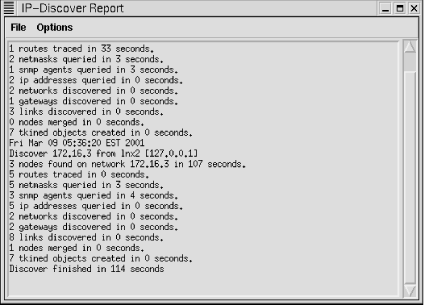

|  |
6.5. Mapping or Diagramming
At this point, you should have a good idea of how to find out what is on your network. The next step is to put together a picture of how everything interconnects. This is usually referred to as mapping but may go by other names such as network drawing or diagramming. This can be absolutely essential if you are dealing with topology-related problems. A wide spectrum of approaches may be taken. At one extreme, you could simply use the collected data and some standard drawing utility to create your map. Clearly, some graphics software is better suited than others for this purpose. For example, special icons for different types of equipment are particularly nice. But almost any software should be usable to a degree. I have even put together passable diagrams using the drawing features in Microsoft Excel. Manual diagramming is usually practical only for a single segment or a very small network. But there might be times when this will be desirable for larger networks -- for example, you may be preparing graphics for a formal presentation. This, however, should be an obvious exception, not a routine activity. In the middle of the spectrum are programs that will both discover and draw the network. When using tools with automatic discovery, you will almost certainly want to clean up the graphics. It is extremely hard to lay out a graph in an aesthetically pleasing manner when doing it manually. You can forget about a computer doing a good job automatically. Another closely related possibility is to use scripting tools to update the files used by a graphing utility. The graphic utility can then display the new or updated map with little or no additional interaction. While this is a wonderful learning opportunity, it really isn't a practical solution for most people with real time constraints. At the other extreme, mapping tools are usually part of more comprehensive management packages. Automatic discovery is the norm for these. Once the map is created, additional management functions -- including basic monitoring to ensure that devices and connections still work and to collect performance data -- are performed. Ideally, these programs will provide a full graphic display that is automatically generated, includes every device on the network, provides details of the nature and state of the devices, updates the map in real time, and requires a minimum of user input. Some tools are well along the path to this goal. There are problems with automatic discovery. First, you'll want to be careful when you specify the networks to be analyzed and keep an eye on things whenever you change this. It is not that uncommon to make an error and find that you are mapping devices well beyond your network. And, as explained later in this chapter, not everyone will be happy about this. Also, many mapping programs do a poor job of recognizing topology. For example, in a virtual LAN, a single switch may be logically part of two different networks. Apart from proprietary tools, don't expect many map programs to recognize and handle these devices correctly. Each logical device may be drawn as a separate device. If you are relying solely on ICMP ECHO_REQUEST packets, unmanaged hubs and switches will not be recognized at all, while managed hubs and switches will be drawn as just another device on the network without any indication of the role they play in the network topology. Even with automatic discovery, network mapping and management tools may presuppose that you know the basic structure of your network. At a minimum, you must know the address range for your network. It seems very unlikely that a legitimate administrator would not have this information. If for some bizarre reason you don't have this information, you might begin by looking at the routing tables and NAT tables in your router, DNS files, DHCP configurations, or Internic registration information. You might also use traceroute to identify intermediate segments and routers.6.5.1. tkined
An excellent example of a noncommercial, open source mapping program is tkined. This is a network editor that can be used as a standalone tool or as a framework for an extensible network management system. At its simplest, it can be used to construct a network diagram. Figure 6-1 is an example of a simple network map that has been constructed using tkined tools. (Actually, as will be explained, this map was "discovered" rather than drawn, but don't worry about this distinction for now.)
Figure 6-1. A network map constructed with tkined
6.5.1.1. Drawing maps with tkined
Manually drawing a map like this is fairly straightforward, although somewhat tedious for all but the smallest networks. You begin by starting tkined under an X Window session. (This discussion assumes you are familiar with using an X Window application.) You should see the menu bar across the top window just under the titlebar, a toolbar to the left, and a large, initially blank work area called the canvas. To create a map, follow these steps:-
Add the devices to the canvas. Begin
by clicking[28] on the machine icon
on the toolbar on the left. This is the icon with the question mark
in the middle. With this tool selected, each time you click over the
canvas, a copy of this icon will be inserted on the canvas at the
cursor.
[28]Unless otherwise noted, clicking means clicking with the left mouse button.
You can change the appearance of each of these icons to reflect the type of device it represents. First, click on Select on the toolbar (not Select on the menu). Next, select the icon or icons you want to change. You select single icons by clicking on them. Multiple icons can be selected by Shift-clicking on each in turn. As you select devices, small boxes are displayed at the corners of the icon. Once you have selected the icons of interest, go to the icon pull-down menu and select the icon you want from the appropriate submenu. Notice that the icon on the toolbar changes. (You could make this change before inserting devices if you wish and insert the selected icon that way.) - Label each device. Right-click on each device in turn. From the pop-up menu, select Edit All Attributes..., enter the appropriate name and IP address for each device, and then select Set Values. Once you have done this, right-click on the icon again and select Label with Attribute..., select either name or address depending on your preference, and then click on Accept.
- Add the networks. This is done with the tool below the machine icon (the thick bar). Select this tool by clicking on it. Click where you want the bar to begin on the canvas. Move the mouse to where you want the network icon to end and click a second time. You can label networks in the same way you label nodes.
- Connect devices to the networks. You can join devices to a network using the next tool on the toolbar, the thin line with little boxes at either end. Select this tool, click on the device you want to join to the network, and then click on the appropriate network icon. As you move the mouse, a line from the icon to the mouse pointer will be shown. When you click on the network, the line should be attached to both the device and the network. If it disappears, your aim was off. Try again. At this point, you will probably want to rearrange your drawing to tidy things up. You can move icons by dragging them with the middle mouse button. (If your mouse doesn't have three buttons, try holding down both the left and right buttons simultaneously.)
-
Group devices and networks. This
allows you to collapse a subnet into a single icon. You can open
whichever subnets you need to work with at the moment and leave the
rest closed. For large networks, this is essential. Otherwise, the
map becomes too cluttered to use effectively.
To combine devices, use the Select tool
to select the devices and the network. Then select Structure
 Group. You can use this same menu to select Ungroup, Expand, and
Collapse for your groups. You can edit the group label as desired in
the previously discussed manner.
Group. You can use this same menu to select Ungroup, Expand, and
Collapse for your groups. You can edit the group label as desired in
the previously discussed manner.
6.5.1.2. Autodiscovery with tkined
For a small network, manually drawing a diagram doesn't take very long. But for large networks, this can be a very tedious process. Fortunately, tkined provides tools for the automatic discovery of nodes and the automatic layout of maps. You begin with Tools IP-Discover. What this does is add the IP
Discover menu to the menu bar. The first two items on this menu are
Discover IP Network and Discover Route. These tools will attempt to
discover either the devices on a network or the routers along a path
to a remote machine. When one of these is selected, a pop-up box
queries you for the network number or remote device of interest.
Unfortunately, tkined seems to support only
class-based discovery, so you must specify a class B or a class C
address (although you can specify a portion of a class B network by
giving a class C style subnet address, e.g., 172.16.1.0). It also
tends to be somewhat unpredictable or quirky when trying to discover
multiple networks. If you are using subnets on a class B address,
what seems to work best is to run separate discovery sessions and
then cut and paste the results together. This is a little bit of a
nuisance, but it is not too bad. This was what was actually done to
create Figure 6-1.
Figure 6-2 shows the output generated in
discovering a route across the network and one of the subnets for the
network shown in Figure 6-1. This window is
automatically created by tkined and shows its
progress during the discovery process. Note that it is sending out a
flood of ICMP ECHO_REQUEST packets in addition to the
traceroute-style discovery packets, the ICMP
network mask queries, and the SNMP queries shown here.

Figure 6-2. Route and network discovery with tkined
If you do end up piecing together a network map, other previously discussed tools, such as traceroute, can be very helpful. You might also want to look at your routing tables with netstat. There are a couple of problems in using tkined. Foremost is the problem of getting everything installed correctly. You will need to install Tcl, then Tk, and then scotty. scotty can be very particular about which version of Tcl and Tk are installed. You will also need to make sure everything is in the default location or that the environmental variables are correctly set. Fortunately, packages are available for some systems, such as Linux, that take care of most of these details automatically. Also, tkined will not warn you if you exit without saving any changes you have made. |  | |
| 6.4. Scripts |  | 6.6. Politics and Security |